| |
Logic
Diagram
The logic diagram tool allows the visual construction of Boolean
style logic circuits. These type of models define how a number of
input signals are processed through various kinds of logic gates.
Input terminals and logic gates are connected using signal links.
As a model is being defined the tool automatically updates textual
expressions associated with the output of each logic gate. Once
a diagram is complete a model check facility can be used to identify
likely errors and a truth table of the logic circuit can be automatically
generated.
To view the main multi-CASE help page click here
|
|
|
|

Input Terminals
Definition: Input terminals are used to represent the source of signals
within the logic diagram. Input terminals typically have one or more outgoing
signal links that connect to logic gates.
Input terminals can be assigned a value of either one or zero, (i.e. set/unset,
true/false) which is output from the terminal during real-time evaluation of
the model.
Representation: An input terminal is represented by a small circular
shaped node that is (by default) red in color. The name of the input terminal
is shown above and the currently assigned value is shown below. e.g.

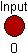
Creation: To add an input terminal right click on the logic diagram
or the logic diagram icon within the project tree and select the "Add Input
Terminal" option from the menu. Position the input outline where you wish
it to be placed on the diagram and left click, enter the name when prompted
and click "OK".
Rules: A maximum of thirty two input terminals can be shown on one model.
Each input terminal should be given a unique name (although this is not enforced).
Operations: Move Forwards/Backwards, Bring to Front, Send to Back, Delete,
Add Outgoing Signal, Add Subsequent AND, Add Subsequent OR, Add Subsequent NOT,
Add Subsequent NAND, Add Subsequent NOR, Add Subsequent XOR, Add Subsequent
XNOR, Add Subsequent NOP/Junction, Is Set, Change Input Node Color, Edit Input
Annotation/Name
Back To Top
Logic Gates
Definition: Logic gates are used to represent a signal manipulation
device within a logic diagram. A logic gate has one or more input signals
and generates a single output signal (although this can be split). There are
various types of logic gate, each having its own particular behavior in terms
of how the input signals are used to generate the output signal. A gate that
has been placed on the model can be changed to be a different gate via its associated
context sensitive menu (see the "Gate Type" sub-menu).
A textual label that shows a logical expression and output
value of the gate is placed above the outgoing signal. This is constructed by
using textual symbols to represent the various types of gates. e.g.
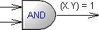
Representation: The logic gates supported are AND,
OR, NOT, NAND, NOR,
XOR, XNOR and NOP.
The representation of each of these and the mapping from input to output signals
is described below.
AND Gate
An AND gate takes one or more input signals (typically two). The output is
1 if all inputs are also 1, otherwise the output is 0, i.e.
| |
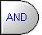 |
Input1 |
Input2 |
Output |
0 |
0 |
0 |
0 |
1 |
0 |
1 |
0 |
0 |
1 |
1 |
1 |
An AND gate is represented in textual expressions by a period character, e.g.
(A . B).
OR Gate
An OR gate takes one or more input signals (typically two). The output is 1
if any inputs are 1, otherwise the output is 0, i.e.
| |
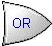 |
Input1 |
Input2 |
Output |
0 |
0 |
0 |
0 |
1 |
1 |
1 |
0 |
1 |
1 |
1 |
1 |
An OR gate is represented in textual expressions by a plus character, e.g.
(A + B).
NOT Gate
A NOT gate takes exactly one input signal. The input signal is negated to form
the output signal. The output is 1 if the input is 0, otherwise the output is
0, i.e.
| |
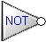 |
Input1 |
Output |
0 |
1 |
1 |
0 |
A NOT gate is represented in textual expressions by a negate character, e.g.
(¬A).
NAND Gate
A NAND (negated AND) gate takes one or more input signals (typically two).
The output is 0 if all inputs are 1, otherwise the output is
1, i.e.
| |
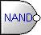 |
Input1 |
Input2 |
Output |
0 |
0 |
1 |
0 |
1 |
1 |
1 |
0 |
1 |
1 |
1 |
0 |
A NAND gate is represented in textual expressions by a combination of the negation
and period characters, e.g. (¬(A . B)).
NOR Gate
An NOR (negated OR) gate takes one or more input signals (typically two). The
output is 0 if any inputs are 1, otherwise the output is 1,
i.e.
| |
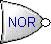 |
Input1 |
Input2 |
Output |
0 |
0 |
1 |
0 |
1 |
0 |
1 |
0 |
0 |
1 |
1 |
0 |
A NOR gate is represented in textual expressions by a combination of the negation
and plus characters, e.g. (¬(A + B)).
XOR Gate
A XOR (exclusive OR) gate takes one or more input signals (typically two).
The output is 1 if either (but not all) inputs
are 1, otherwise the output is 0, i.e.
| |
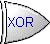 |
Input1 |
Input2 |
Output |
0 |
0 |
0 |
0 |
1 |
1 |
1 |
0 |
1 |
1 |
1 |
0 |
A XOR gate is represented in textual expressions by a caret character, e.g.
(A ^ B).
XNOR Gate
A XNOR (exclusive negated OR) gate takes one or more input signals (typically
two). The output is 0 if either (but not all)
inputs are 1, otherwise the output is 1, i.e.
| |
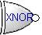 |
Input1 |
Input2 |
Output |
0 |
0 |
1 |
0 |
1 |
0 |
1 |
0 |
0 |
1 |
1 |
1 |
A XNOR gate is represented in textual expressions by a combination of the negation
and caret characters, e.g. (¬(A ^ B)).
NOP Gate
A NOP (no operation) gate takes exactly one input signal. The input and output
signals match exactly. NOP gates are useful to represent junctions (i.e. the
splitting of signals) or output terminals. In the latter case it is often sensible
to give the gate a unique name so that it can be identified within truth
tables. With a NOP gate the output is 1 if the input is 1, otherwise the
output is 0, i.e.
| |
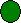 |
Input1 |
Output |
0 |
0 |
1 |
1 |
A NOP gate has no representation in textual expressions since it has no effect
on output.
Creation: To add a logic gate right click on the logic diagram and select
the appropriate "Add .... Gate" option from the menu. Position the
gate outline where you wish it to be placed on the diagram and left click. A
logic gate can also be added by right clicking on an existing gate and selecting
the appropriate "Add Subsequent .... Gate" option from the menu. In
this case a signal link from the original gate to the
new gate is created automatically.
Rules: A logic gate should have at least one input signal and should
generate exactly one output signal. NOT gates and NOP
gates can have no more than one input signal.
Operations: Move Forwards/Backwards, Bring to Front, Send to Back, Delete,
Add Outgoing Signal, Add Subsequent AND,Add Subsequent OR, Add Subsequent NOT,
Add Subsequent NAND, Add Subsequent NOR, Add Subsequent XOR, Add Subsequent
XNOR, Add Subsequent NOP/Junction, Gate Type, Edit Gate Annotation/Name.
Back To Top
Logic Signals
Definition: A logic signal represents a connection path between two
logic gates. A signal is output from a logic gate, travels
along a signal link, and is input into another logic gate. Input
terminals are the originating point of the signal values and therefore can
be the source element of a signal link. Whenever a logic signal is added, the
textual expressions associated with effected gates will be automatically updated.
Representation: A logic signal is represented by a graphical link between
two logic gates. A textual expression of the output from the source gate is
shown above the link. e.g.
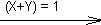
Creation: To add a signal link right click on either the input terminal
or the logic gate which is to be the source of the link and select the "Add
Outgoing Signal" option from the menu. Use the mouse to position the other
end of the link over the gate that is to be the destination of the signal and
left click.
Rules: A logic signal link must originate from either an input terminal
or a logic gate and terminate at a logic gate.
Operations: Move Forwards/Backwards, Bring to Front, Send to Back, Delete,
Add/Remove Link Point, Change Link Color, Edit Signal Annotation.
Truth Tables
The logic diagram tool has the ability to automatically generate truth tables
from input models. A truth table provides a none diagrammatical view of the
model in terms of how input values are mapped to output values. When the truth
table is generated every possible combination of input values is automatically
calculated and used as input into the defined model. The generated output from
each possible combination is then output on the associated row within the table.
e.g. the truth table below was generated from the example
model.
Truth Table: Inputs
--> Outputs
| X |
Y |
Carry |
Sum |
| 0 |
0 |
0 |
0 |
| 0 |
1 |
0 |
1 |
| 1 |
0 |
0 |
1 |
| 1 |
1 |
1 |
0 |
The truth table is generated as a HTML type document. The generated document
is output to a file. The name of this file must be specified by the user, it
is recommended that the default suffix is left unchanged (since this is appropriate
for the type of file being generated).
Example
Below is an example of a Logic Diagram that represents a half-adder type circuit.
There are two input terminals named 'X' and 'Y'. Notice
how NOP gates have been used to represent output terminals.
In this case these are named 'Carry' and 'Sum'. The truth
table generated from this example is shown above.
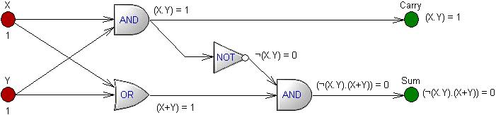